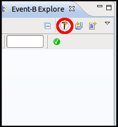

3.1 Install Theory Plug-in
The installation or update for the Theory plug-in is available under the main Rodin Update site (http://rodin-b-sharp.sourceforge.net/updates) under the category "Modelling Extensions". Like always, after the installation, restarting Rodin is recommended. For more details, see http://wiki.event-b.org/index.php/Theory_News_and_Support.
Figure 1: Install Theory Plug-in
Once the Theory plug-in is successfully installed, menu entries will be added in certain places. In particular, the Event-B Explorer will have an additional button  that initiates the wizard to create new theory files.
that initiates the wizard to create new theory files.

Figure 2: New Theory Button in Event-B Explorer